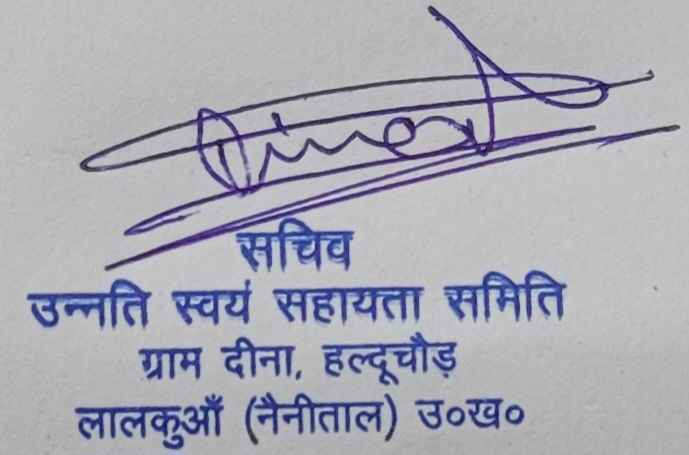

उन्नति स्वयं सहायता समिति
वर्ष 2016 से गौ संरक्षण, निराश्रित गोवंश सहायता, घायल पशुओं के उपचार, पक्षियों हेतु दाना-पानी, वृक्षारोपण, जनसेवा एवं राष्ट्रमाता जनजागरण अभियान में समर्पित।
उन्नति स्वयं सहायता समिति हल्द्वानी उत्तराखण्ड स्थित एक पंजीकृत सामाजिक संस्था है। संस्था 2016 से गौ संरक्षण, पशु सेवा, पर्यावरण संरक्षण, महिला सशक्तिकरण, जनजागरण एवं मानवीय सहायता कार्यों में सक्रिय है।
- 🐄 गौ संरक्षण अभियान
- 🚑 घायल गोवंश सहायता
- 🐦 पशु-पक्षी दाना पानी
- 🌳 वृक्षारोपण अभियान
- 🤝 सामाजिक सेवा
- 🇮🇳 राष्ट्रीय सदस्यता अभियान
✔ NITI Aayog Unique ID : UA/2016/0108273
✔ 12A प्रमाणित
✔ 80G प्रमाणित
✔ CSR पात्र संस्था
✔ 11 वर्ष पुरानी पंजीकृत संस्था
2016+
सेवा यात्रा
भारत
राष्ट्रीय सदस्यता
हरित
वृक्षारोपण
सेवा
पशु-पक्षी सहायता
गौ माता को राष्ट्रमाता एवं राज्य माता का सम्मान दिलाने हेतु उन्नति स्वयं सहायता समिति द्वारा ऐतिहासिक दण्डवत यात्रा, 120 घंटे का अनशन तथा जनजागरण अभियान संचालित किया गया।
भारत के प्रत्येक राज्य, जिला एवं ग्राम स्तर पर गौ संरक्षण, गौ सेवा, राष्ट्रमाता अभियान एवं सड़क दुर्घटनाओं से गोवंश संरक्षण हेतु स्वयंसेवकों को जोड़ा जा रहा है।
🪪 सदस्य बनें • ID Card प्राप्त करेंसदस्यता फॉर्म में प्राप्त जानकारी केवल संस्था के आधिकारिक कार्यों, पहचान पत्र, नियुक्ति पत्र, सदस्यता रिकॉर्ड एवं संगठनात्मक संपर्क हेतु उपयोग की जाती है।

राष्ट्रीय सचिव
उन्नति स्वयं सहायता समिति